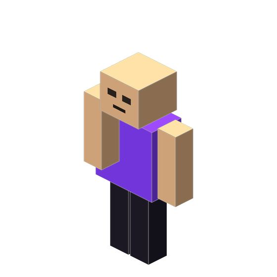
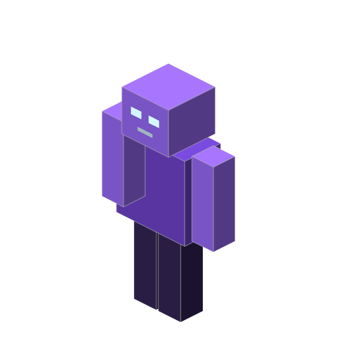
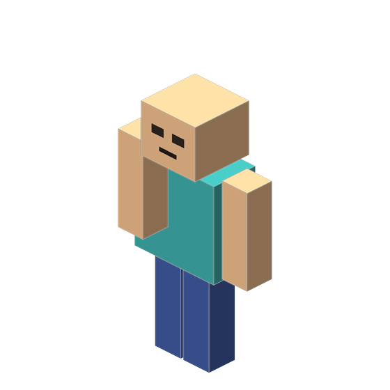
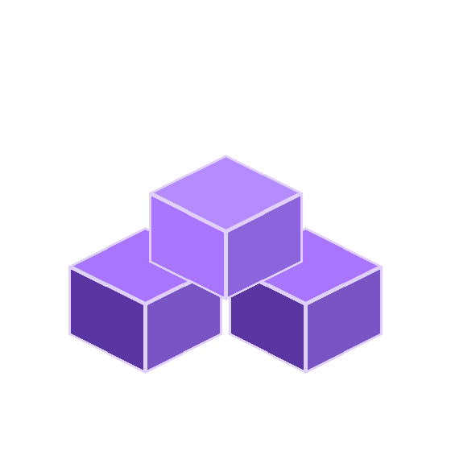
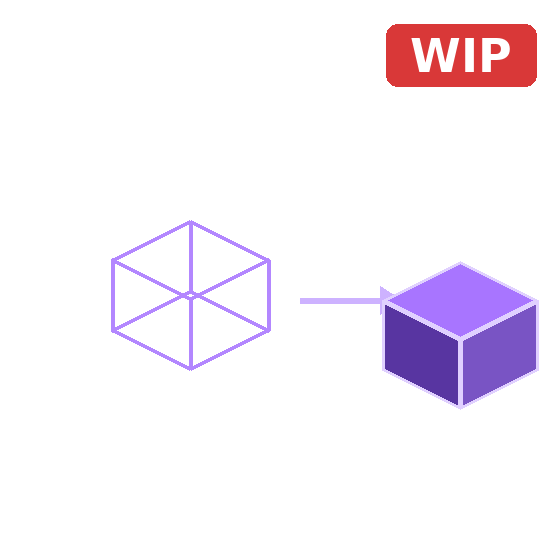

VALIDATOR & FIXER
Checks geometry.json, render controllers and ambiguous or duplicate model names, then auto-resolves the obvious issues — broken references, ambiguities, small details — and flags the rest for you.
Minecraft Bedrock Skin Manager
Each module does exactly one thing, and does it well.

Checks geometry.json, render controllers and ambiguous or duplicate model names, then auto-resolves the obvious issues — broken references, ambiguities, small details — and flags the rest for you.
Check and fix skin packs
Preview bones, cubes and pivots of custom geometries with the skin applied, rotating live — or send 4D models straight to an embedded Blockbench editor.
View and edit models
See a regular Minecraft Bedrock skin applied to the Steve/Alex model, rotating live, before using it in-game.
View and edit classic skins
Generates the full skin pack structure — manifest, geometry and textures — without touching a console.
Create skin packs for Bedrock
Import an .obj + texture, assign parts to bones, adjust pivots visually, and export a real Bedrock 1.8.0 poly_mesh — ready as a full skin pack.
Convert 3D models to skinsNo recent projects yet — start by validating a pack or building a skin.
Validating, fixing, previewing and building skin packs all runs locally in JavaScript — nothing is uploaded anywhere. The one exception: sending a 4D model to the embedded Blockbench Web editor briefly sends that model's data to web.blockbench.net so it can open it.
Full interface in both languages, with automatic browser-language detection.
Not a generic validator: it understands custom geometries, extra layers and ambiguous models.
MBSM is built in the open. Report bugs, request features or check the code yourself.
Open the validator and check your first pack in under a minute.
Get startedEverything for 4D/5D Minecraft Bedrock skin packs: validate and automatically fix broken references, missing files or JSON errors, or preview your 5D and 4D models live in 3D without leaving MBSM.
Accepts .zip and .mcpack Minecraft Bedrock skin pack files.
The analysis runs entirely in your browser.
No file is ever sent to any external server.
Select or drag a ZIP or MCPACK file to start the analysis.
Live 3D preview for 4D/5D geometries: 5D models (poly_mesh) render directly here, 4D models (cubes) open in an embedded Blockbench Web editor, all without leaving MBSM.
Import a 3D model (.obj) exported from Blender or another program, assign its parts to a skeleton's bones, position pivots visually, and export a real Bedrock 1.8.0 geometry (poly_mesh) — ready as a full skin pack (manifest.json, skins.json, lang and textures included).
Suelta tu .obj y tu textura aquí
Sube un archivo .obj exportado desde Blender/otro programa, con sus objetos o grupos nombrados (cabeza, brazo, torso, etc.) y una textura.
Cuanto mejor nombrados estén los grupos del .obj, mejor podrá autoasignarlos esta herramienta a los huesos del esqueleto.
Preview regular Minecraft Bedrock skin packs in 3D, or build your own pack from scratch.
Accepts .zip and .mcpack Minecraft Bedrock skin pack files.
Build a regular Minecraft Bedrock skin pack: import skins, choose their model, and download a ready-to-install .mcpack.
Accepts 64x64, 64x32 (legacy) and 128x128 skins.
Fetches the current skin of a Minecraft Java Edition account.
No skins added yet.
Click a field above, then tap a color or format to insert it there.
MBSM is a free toolbox for Minecraft Bedrock skin packs that runs almost entirely in your browser: a validator for 4D/5D packs with custom geometries, a 3D skin viewer, a 4D/5D viewer with an embedded Blockbench Web editor, an OBJ → Skin 1.8 converter that turns a 3D model into a working 5D skin pack, and a skin pack builder. The only thing that ever leaves your browser is a 4D model's data when you send it to that embedded Blockbench editor — everything else stays local.
The goal is to catch exactly the mistakes that usually make a skin not show up in-game, a model fail to load, or textures break — and to make building a pack from scratch simple.
Checks geometry.json, render controllers and ambiguous or duplicate model names, then auto-resolves the obvious issues — broken references, ambiguities, small details — and flags the rest for you.
Preview bones, cubes and pivots of custom geometries with the skin applied, rotating live — or send 4D models straight to an embedded Blockbench editor.
See a regular Minecraft Bedrock skin applied to the Steve/Alex model, rotating live, before using it in-game.
Generates the full skin pack structure — manifest, geometry and textures — without touching a console.
Import an .obj + texture, assign parts to bones, adjust pivots visually, and export a real Bedrock 1.8.0 poly_mesh — ready as a full skin pack.
Verifies that the identifiers used in skins.json actually exist in geometry.json.
Checks that every image referenced by a skin physically exists inside the package and detects upper/lowercase mismatches.
Checks that every localization_name has its matching entry in texts/.lang and detects missing or extra keys.
Validates UUID, format_version, present modules and other common issues in manifest.json.
Detects JSON files with syntax errors and shows the approximate location of the problem whenever possible.
Compares names, paths, duplicate references and overall consistency across every file in the skinpack.
404
There's no tool at this address — it may be mistyped, or the link is outdated.
Back to Home